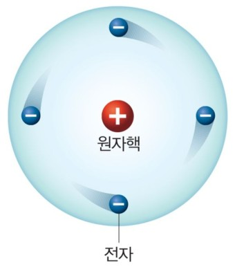

영국의 물리학자 러더퍼드는 α입자(헬륨4 원자핵) 산란실험을 통해 기존의 원자모형을 한 번 더 바꾸었다.(러더퍼드 원자모형)
α입자 산란실험: 1909년 러더퍼드가 했었던 실험으로 α입자를 금박에 쏘는 실험이었다. 원래라면 α입자는 물질에 대한
투과성이 강하기 때문에 금박을 뚫고 직진을 해야한다.

하지만 α입자는 직진을 하지 않았고 α입자의 경로는 휘어져있었다. 어느 것은 금박 뒤로 휘어지기도 하였다. 러더퍼드는 이
실험결과에 대한 이유를 발표하며, 새로운 원자모형을 만들게 되었다.
러더퍼드는 위 실험 결과를 바탕으로 원자핵을 추측하였다. +전하를 가진 α입자가 휘어지게 하려면 원자핵에도 강력한
양전하가 있을 것이라고 추측하여 나온 것이 원자핵이다. 원자는 +전하를 가진 원자핵이 가운데에 놓여져있어, 전자가
원자핵 주변을 도는 모형을 만들어냈다.

하지만 이 모형에도 치명적인 단점이 하나 있다. 고전역학적으로 보았을 때, 전자는 계속 원운동을 하면서 전자기파가 방출
되는데, 이 때, 에너지를 잃어버린 전자는 불안정한 궤도상태로 원자핵과 충돌해야한다는 문제점이 있었다.